Uma Ovelha nos carris para experimentar mais algumas ferramentas
1. Comece por criar um objeto que vai servir de modelo para os carris. O nosso objeto foi modelado a partir de um cubo. Atribua dois materiais para diferenciar a parte de madeira e os carris de metal.
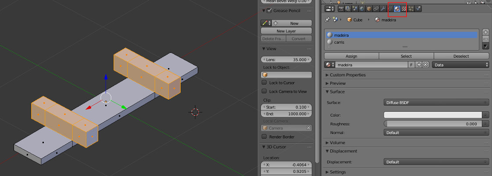2. Insira uma Bezier (Curve) e, em Edit Mode, manipule a mesma até ćonstruir um percurso similar ao da imagem abaixo.
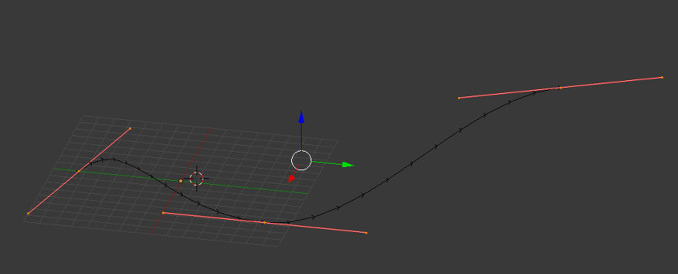3. Coloque a Origin do carril e da Bezier alinhados. No nosso caso, utilizámos o Snap (Shift+S) e Cursor to Center para colocar o cursor no centro da grelha. Depois, selecionámos cada um dos objetos e, novamente com Snap, Selection To Cursor.
Selecione cada um dos objetos (carril e Curve) e aplique a Rotation e a Scale (Ctrl+A).
Selecione o carril e adicione um modifier Array com opção Fit Curve e escolha a Bezier Curve manipulada no passo anterior.
Adicione um novo modifier Curve e escolha a Bezier Curve manipulada no passo anterior.
Deverá obter uma imagem similar à apresentada abaixo. Pode manipular a Curve para melhorar o aspeto e certifique-se que tem as Origin dos dois objetos (carril e Curve) alinhadas.
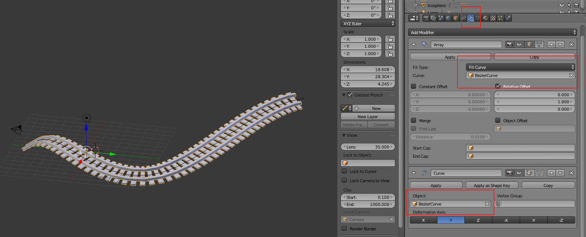4. Posicione a câmara. Se precisar de mover/rodar o carril, selecione o carril e Curve e mova ambos.
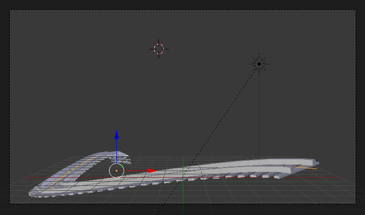5. Numa outra layer, adicione um cubo para criarmos o vagão. Em Edit Mode, faça Unwrap ao cubo.
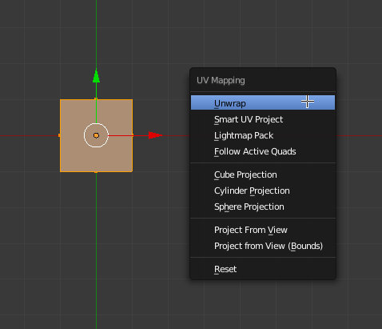 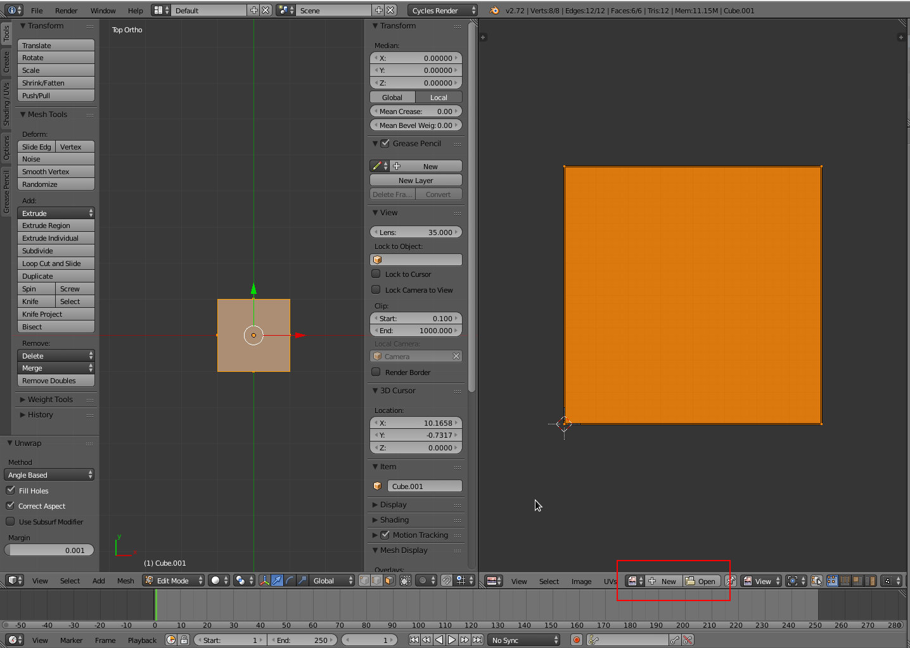6. Insira uma imagem. No nosso caso, estamos a utilizar a mesma imagem (disponível aqui) para as 6 faces.
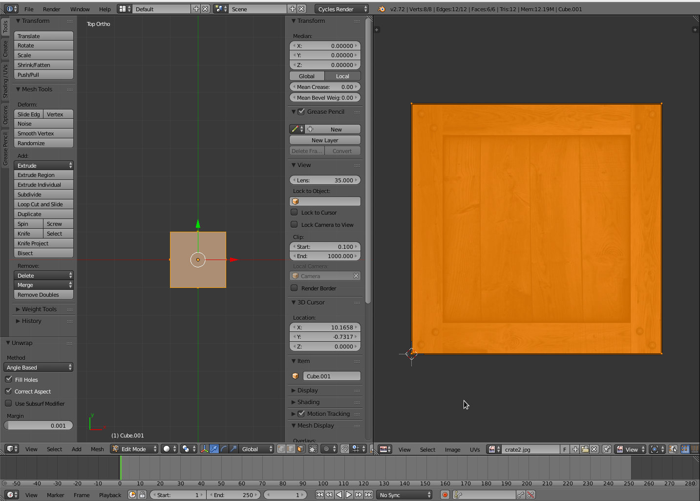7. Configure o material para a imagem ser visível. Se desejar, pode ainda adicionar a imagem do normal map e a do specular map.

8. Faça um Scale suave na face superior do cubo. No nosso caso, fizemos ainda um scale suave em X para o vagão ser mais comprido do que largo.
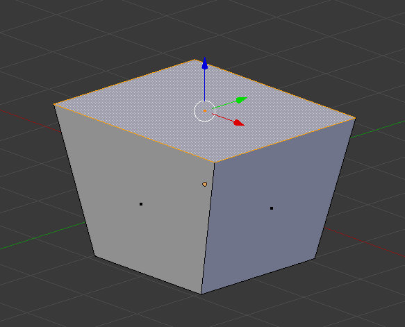9. Crie uma rodas, posicione as mesmas corretamente e crie um parentesco com o vagão (selecione as rodas e, em último, o vagão depois clique em Ctrl+P).
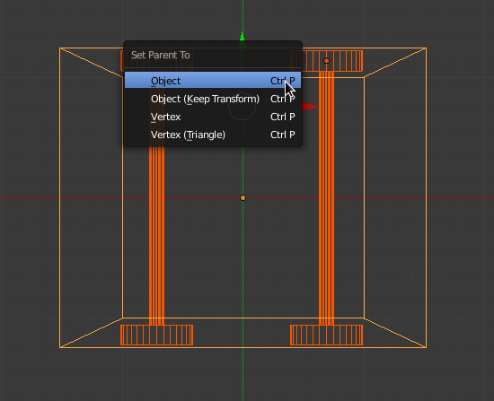 10. Ative as layers onde tem o vagão e o carril. Posicione o vagão em cima do carril. 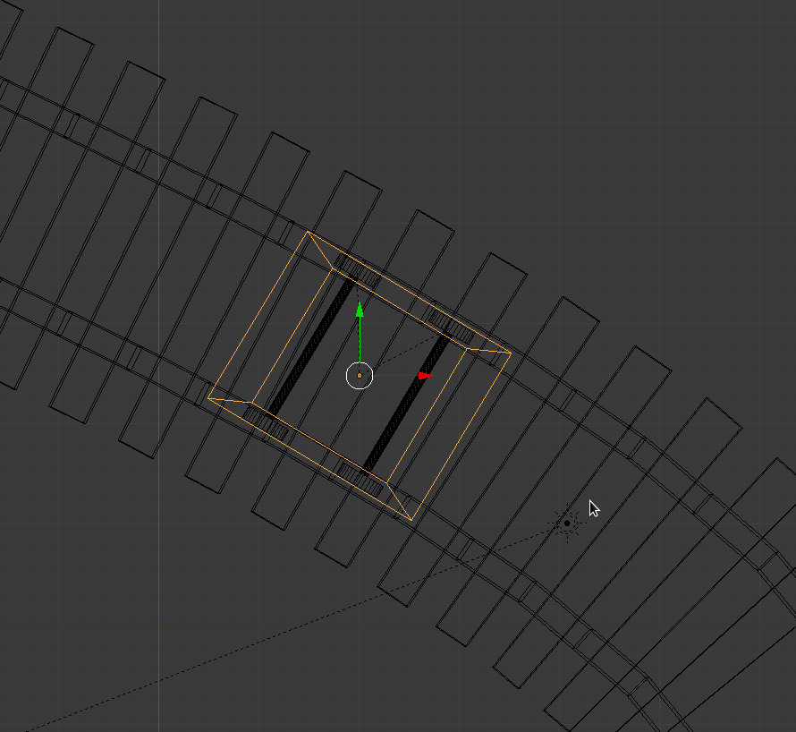11. Adicione um cubo, redimensione de acordo com a imagem e subdivida-o. Depois, utilize a ferramenta Proportional Editing para criar alguma irregularidade. Atribua um material.
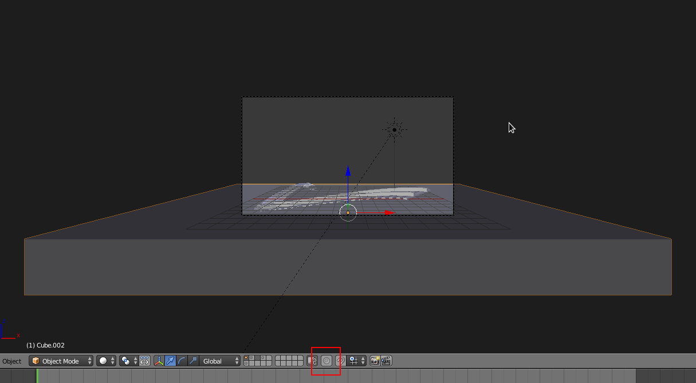 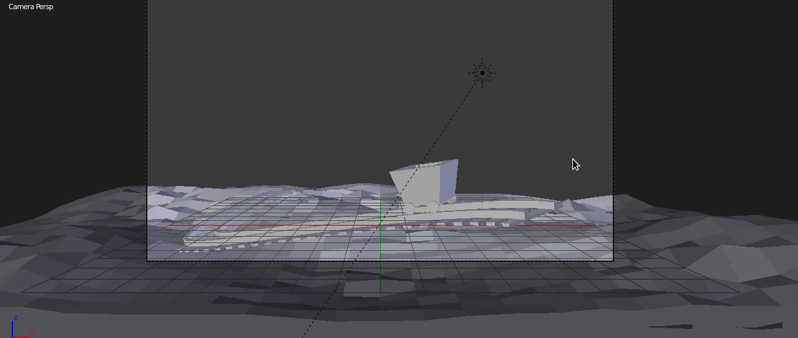12. Atente na imagem acima para ver a localização/direção do Sol. A nossa iluminação irá ser muito simples: uma luz Sun e Background.
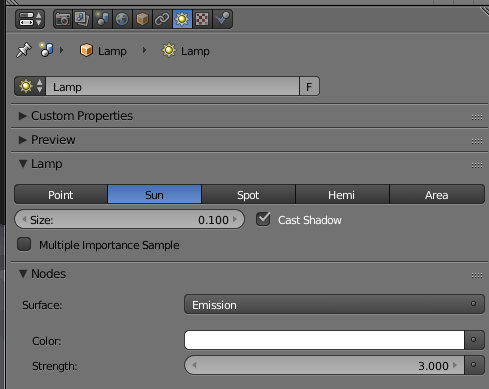 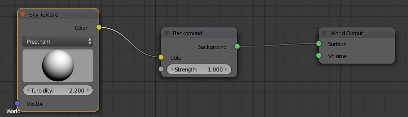 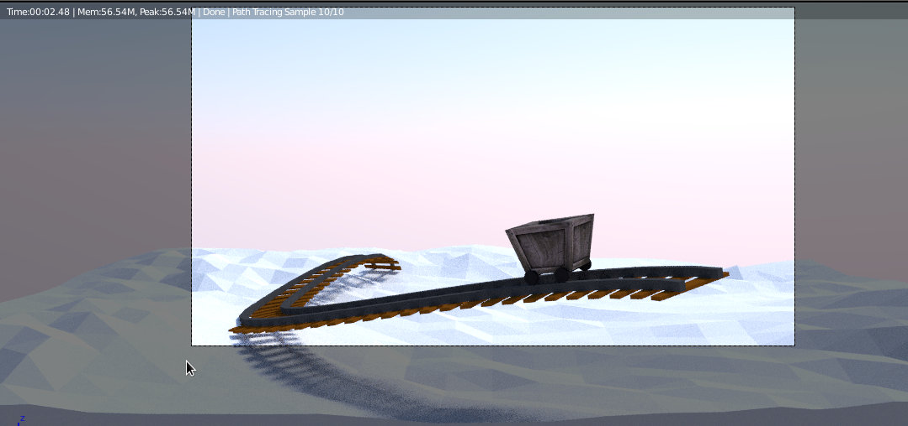13. Noutra layer, vamos criar a personagem. Adicione uma Suzanne e uma IcoSphere. Redimensione a IcoSphere criando uma forma mais oval similar à imagem abaixo.
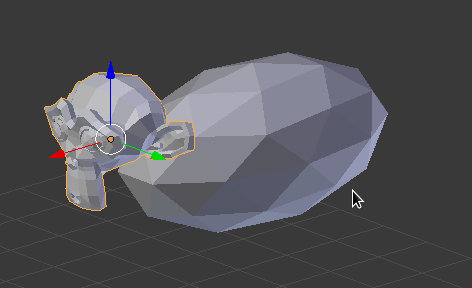14. Adicione uma UVSphere e aparente esta à IcoSphere. A UVSphere é "child" e a IcoSphere é "parent". No painel Object da IcoSphere, ative a duplicação para Verts. Deste modo, irá surgir uma UVSphere em cada vértice da IcoSphere. Alinhe as duas e redimensione a seu gosto.
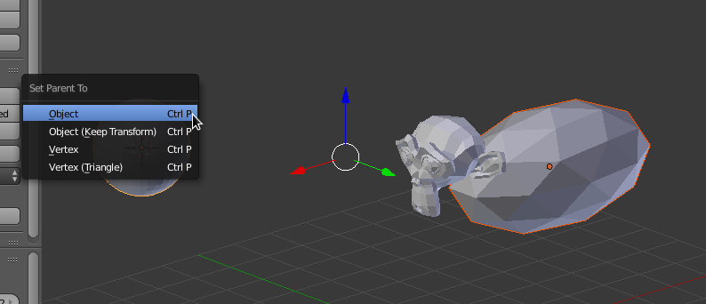 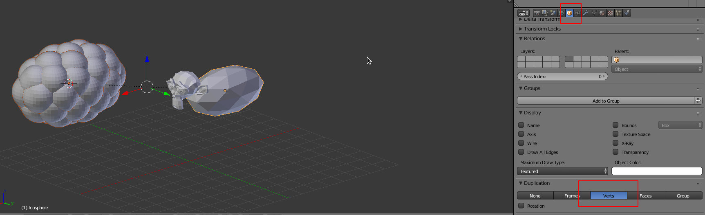15. Alinhe a IcoSphere+UVSpheres com o vagão. Depois posicione a Suzanne. No nosso caso, foi utilizado um modifier Subdivision Surface e Shading Smooth na Suzanne. Adicione materiais à Suzanne.
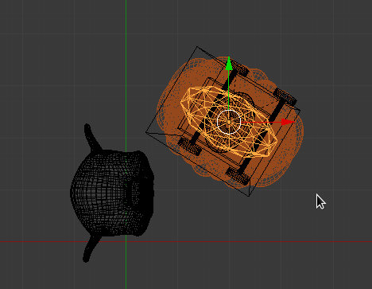16. Adicione material à UVSphere.
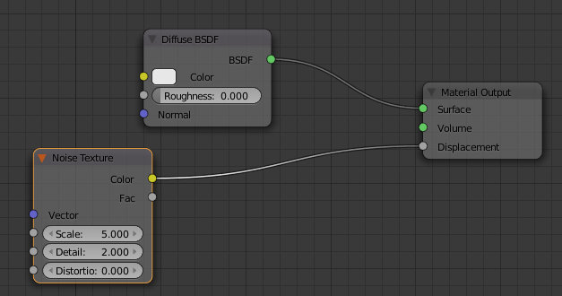17. Deverá obter algo similar à imagem abaixo.
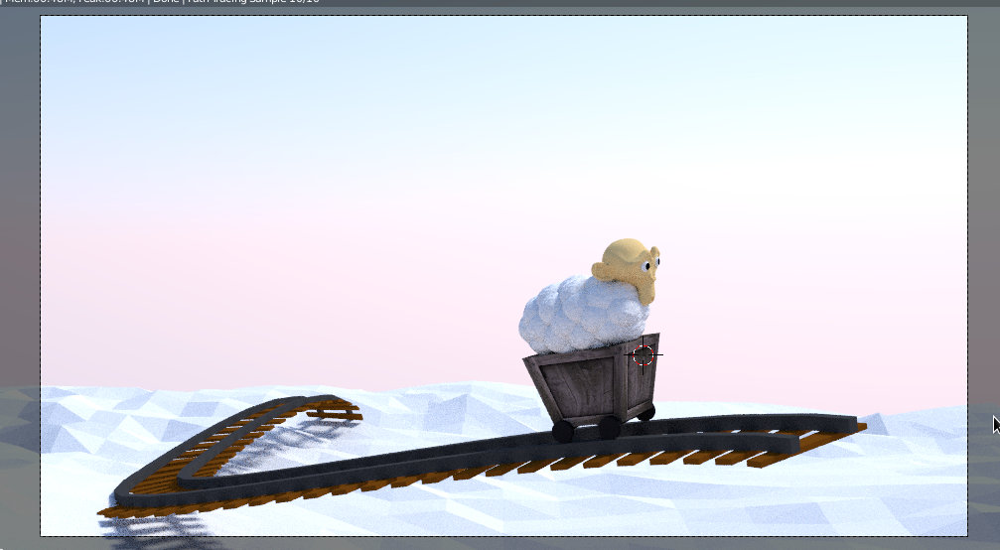18. Adicione uma UVSphere e posicione a mesma de acordo com as imagens abaixo.
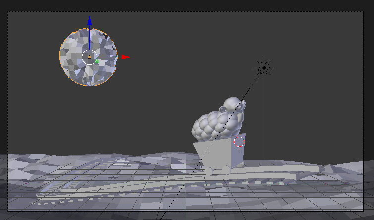 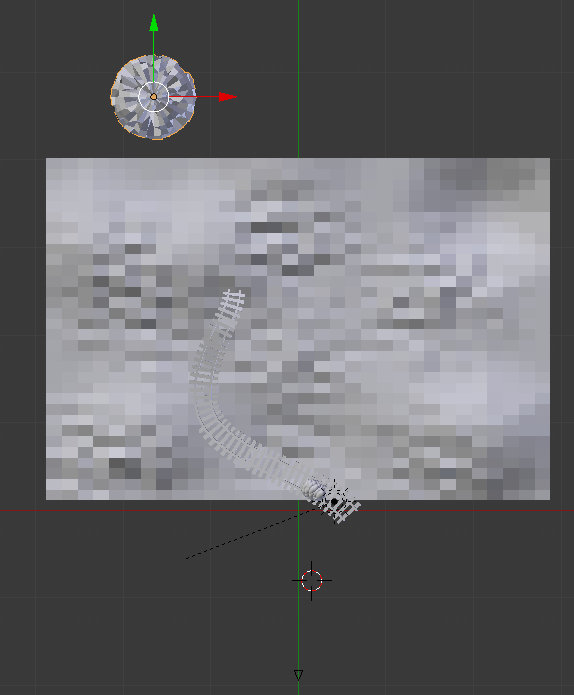19. Adicione um modifier Displace à UVSphere com uma textura de tipo Noise.
20. Na etapa de composição, adicionámos 2 efeitos: Sun Beams (azul) e Vignette (vermelho). Se precisar de mais informação sobre estes efeitos, pode consultar os textos Sun Beams e Introdução ao editor de nós.
Também foi adicionada Depth of Field: a câmara está focada na IcoSphere e foi utilizado um Radius Size de 0.1000. Se precisar de mais informação sobre esta técnica, consulte o texto sobre a Câmara
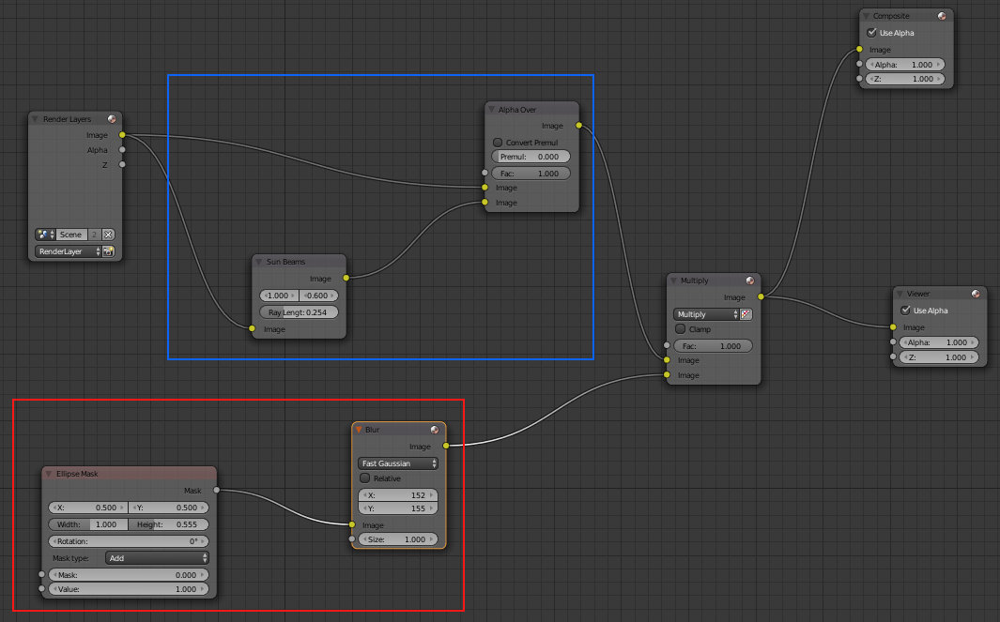